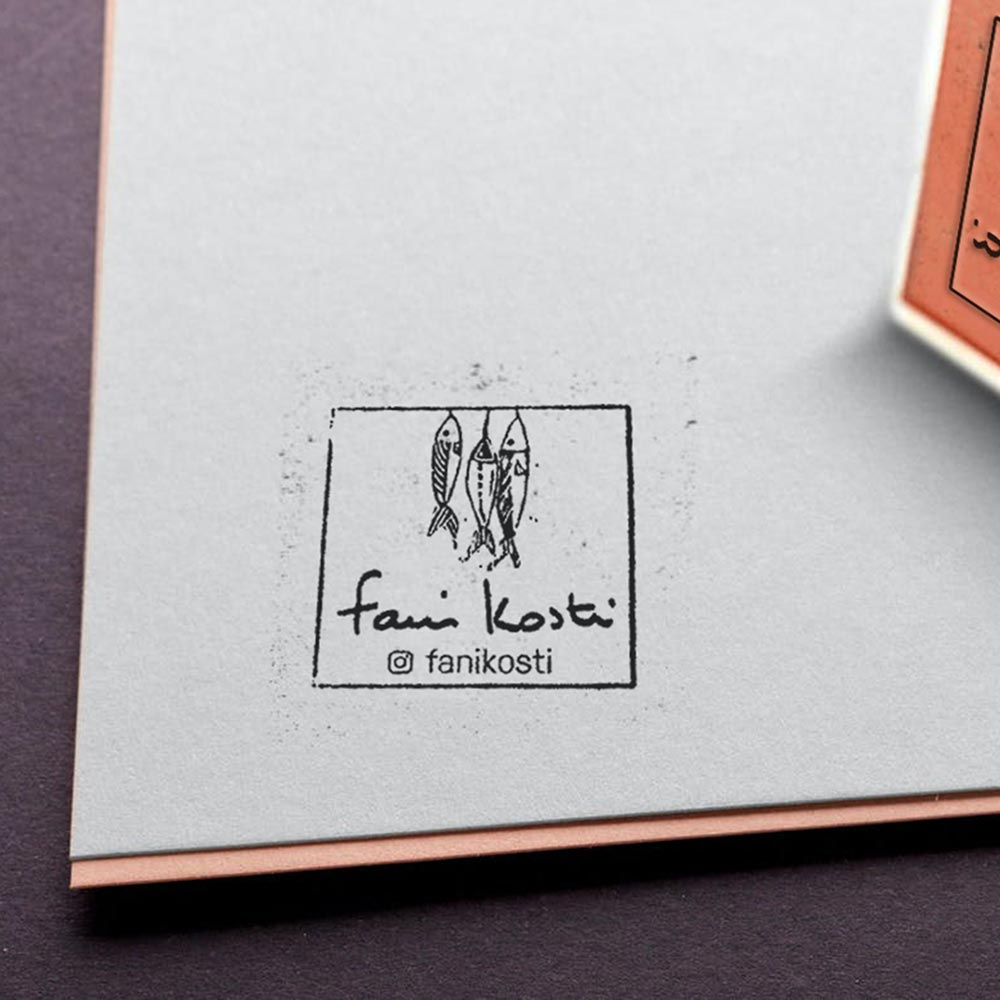

Menu
beyond frames.
What we do.
projects.
follow me
projects.
all.
graphics.
branding.
web.
'Chef at home' website
branding & web
Logo proposal
branding
Creation of graphic guidelines for an oasian civil society networks
branding
Book editing - Land & climate : time to act!
graphics
Mobile devices proposal
web
International event - Creation of a visual design and his declensions
branding & graphics
Creation of a 'gender label' for sustainable projects in Africa
graphics
Definition of new visual design and content management
branding & graphics
Editing - Sustainable development & good practises in oases
graphics
Program of the Civil Society Pavilion for the Climate COP in Marrakech
graphics
Creation of an elegant graphic design and print declension for a 'chef at home'
branding & graphics
Creation of an elegant fly for a 'chef at home'
graphics

Declension of a french artist's graphic identity
branding
Declension of a french artist's graphic identity
branding & graphics
Content management, optimization & SEO for a range of websites
web